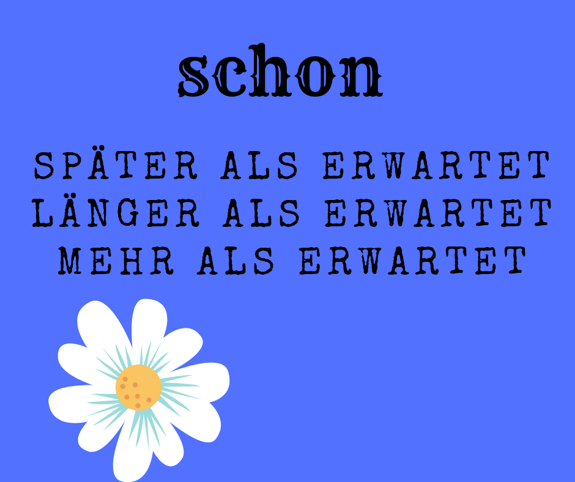
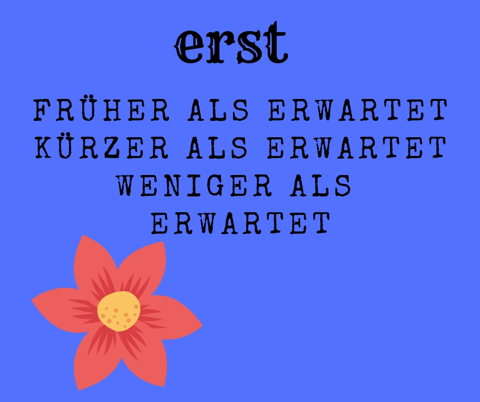
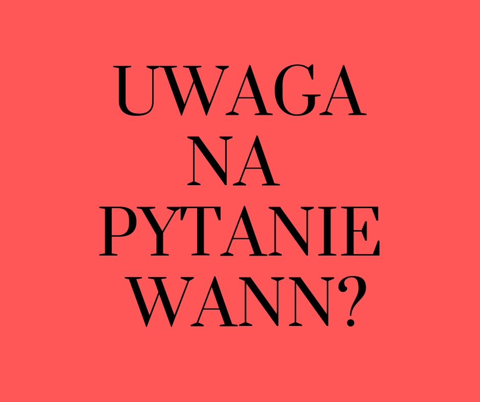
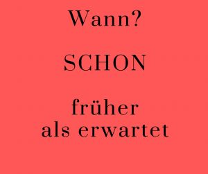
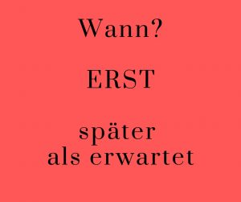

<?xml version="1.0" encoding="UTF-8"?><rss version="2.0"
	xmlns:content="http://purl.org/rss/1.0/modules/content/"
	xmlns:wfw="http://wellformedweb.org/CommentAPI/"
	xmlns:dc="http://purl.org/dc/elements/1.1/"
	xmlns:atom="http://www.w3.org/2005/Atom"
	xmlns:sy="http://purl.org/rss/1.0/modules/syndication/"
	xmlns:slash="http://purl.org/rss/1.0/modules/slash/"
	>

<channel>
	<title>Adverbien &#8211; Prosty &#8211; Niemiecki!</title>
	<atom:link href="../../../../category/gramatyka/adverbien/feed/index.html" rel="self" type="application/rss+xml" />
	<link>https://prosty-niemiecki.pl</link>
	<description>Anna Przyrowska: blog o autorskiej metodzie nauki języka niemieckiego</description>
	<lastBuildDate>Sun, 14 Apr 2019 17:05:28 +0000</lastBuildDate>
	<language>pl-PL</language>
	<sy:updatePeriod>
	hourly	</sy:updatePeriod>
	<sy:updateFrequency>
	1	</sy:updateFrequency>
	<generator>https://wordpress.org/?v=6.3.1</generator>

<image>
	<url>../../../../wp-content/uploads/2018/10/cropped-indeks-32x32.png</url>
	<title>Adverbien &#8211; Prosty &#8211; Niemiecki!</title>
	<link>https://prosty-niemiecki.pl</link>
	<width>32</width>
	<height>32</height>
</image> 
	<item>
		<title>schon &#8211; erst &#8211; &#8230; (Adverbien) już &#8211; dopiero&#8230;</title>
		<link>../../../../gramatyka/schon-erst-adverbien-juz-dopiero/</link>
					<comments>../../../../gramatyka/schon-erst-adverbien-juz-dopiero/#respond</comments>
		
		<dc:creator><![CDATA[Anna Przyrowska]]></dc:creator>
		<pubDate>Sun, 31 Mar 2019 17:59:14 +0000</pubDate>
				<category><![CDATA[Adverbien]]></category>
		<category><![CDATA[gramatyka]]></category>
		<category><![CDATA[dopiero]]></category>
		<category><![CDATA[erst]]></category>
		<category><![CDATA[już]]></category>
		<category><![CDATA[przysłówek]]></category>
		<category><![CDATA[przysłówki]]></category>
		<category><![CDATA[schon]]></category>
		<category><![CDATA[wann?]]></category>
		<guid isPermaLink="false">../../../../?p=2128</guid>

					<description><![CDATA[
Foto von rawpixel.com von Pexels
]]></description>
										<content:encoded><![CDATA[
<h4 class="wp-block-heading" style="text-align:center">Przysłówki<em> “schon”  oraz  “erst&#8221;</em> i ich  użycie </h4>


<p>Ten wpis nawiązuje bezpośrednio do poprzedniego <a rel="noreferrer noopener" aria-label="wpisu, (opens in a new tab)" href="../../../../gramatyka/noch-schon/" target="_blank">wpisu,</a> dotyczącego użycia przysłówków &#8222;noch&#8221; i &#8222;schon&#8221; (&#8222;jeszcze&#8221;, &#8222;już&#8221;).  Tym razem zajmę się rozróżnieniem pary przysłówków (<strong>schon</strong> &#8211; <strong>erst</strong>)   Wyjaśnię na przykładach zdań różnice w ich użyciu.  W odpowiedzi na  zadane pytania (wypisane poniżej), odpowiedź może brzmieć <strong>schon </strong>lub <strong>erst.</strong></p>


<p>Oto pytania:</p>


<p style="background-color:#a6e3eb" class="has-background">1<strong>.UHRZEIT</strong> &#8211; Wie spat ist es? &#8211;  (Która jest godzina?)</p>


<p style="background-color:#a6e3eb" class="has-background">2<strong>. DAUER </strong>&#8211; Wie lange?/Seit wann? &#8211; (Jak długo/Od kiedy?)</p>


<p style="background-color:#a6e3eb" class="has-background">3.<strong> HAUFIGKEIT</strong> &#8211; Wie oft? &#8211; (Jak często?)</p>


<p style="background-color:#a6e3eb" class="has-background">4. <strong>ANZAHL</strong> &#8211;  Wie viele? &#8211; (Ile?)</p>


<h5 class="wp-block-heading" style="text-align:center">SCHON</h5>


<p>Przysłówek &#8222;<strong>schon</strong>&#8221; użyty w odpowiedzi na zadane pytanie może być przetłumaczony jako &#8222;<strong>już&#8221;</strong> z konotacją <strong>później </strong>niż oczekiwano,<strong> dłużej</strong> niż oczekiwano lub <strong>więcej </strong>niż oczekiwano. W zależności od postawionego pytania.</p>


<figure class="wp-block-image"></figure>


<h5 class="wp-block-heading" style="text-align:center">ERST<br></h5>


<p>Przysłówek &#8222;<strong>erst</strong>&#8221; tłumaczony jako &#8222;<strong>dopiero</strong>&#8221; ma swoim znaczeniu wskazówkę, że coś wydarzyło się <strong>wcześniej </strong>niż oczekiwano, coś trwało <strong>krócej</strong> niż oczekiwano lub otrzymano <strong>mniej </strong>niż oczekiwano.</p>


<figure class="wp-block-image"></figure>


<p>Oto przykłady zdań:</p>


<p>Wie spat ist es? (Która jest godzina)<em> Was, schon 3 Uhr!</em>  (Już trzecia!) <em>Was, erst 3 Uhr?</em> (Co, dopiero 3?)</p>


<p>Wie viele Jahre lernst du Deutsch? (Ile lat uczysz się niemieckiego?) <em>Schon 3 Jahre</em>. (Już trzy lata). <em>Erst 3 Jahre </em>(Dopiero trzy lata)</p>


<p>Wie oft warst du hier? (Jak często bywałeś tu?) <em>Schon vierma</em>l. (Już cztery razy) <em>Erst viermal</em>. (Dopiero cztery razy)</p>


<p>Seit wann bist du hier? (Od kiedy jesteś tu?) <em>Schon seit 2 Stunden.</em> (Już od dwóch godzin).<em> Erst seit 2 Stunden</em> (Dopiero od dwóch godzin).</p>


<p style="text-align:center">Ale jest jeden mały problem przy pytaniu <strong>WANN?</strong></p>


<div class="wp-block-image"><figure class="aligncenter is-resized"></figure></div>


<p>W tym miejscu <strong>&#8222;erst&#8221;</strong> oznacza <strong>später </strong>als erwartet, a &#8222;<strong>schon&#8221;</strong> tłumaczymy jako <strong>früher </strong>als erwartet. Dokładnie odwrotnie niż w podanych wyżej zdaniach. </p>


<p>Zapamiętaj ten schemat:</p>


<div class="wp-block-image"><figure class="aligncenter"></figure></div>


<div class="wp-block-image"><figure class="aligncenter"></figure></div>


<p>Oto przykłady zdań:</p>


<p><strong>Wann</strong> kommt er? (Kiedy on przyjdzie?)<em> <strong>Erst </strong>um 8 Uhr?</em> (Dopiero o ósmej?)<em> <strong>Schon</strong> um 8 Uhr! </em>(Już o ósmej)</p>


<p>Mam nadzieję, że teraz nie będzie problemów z prawidłowym tłumaczeniem oraz prawidłowym użyciem przysłówków <strong>erst</strong> i <strong>schon</strong>   </p>


<p><br></p>


<p></p>


<div class="fb-like" data-share="true" data-width="450" data-show-faces="true">&nbsp;</div>]]></content:encoded>
					
					<wfw:commentRss>../../../../gramatyka/schon-erst-adverbien-juz-dopiero/feed/</wfw:commentRss>
			<slash:comments>0</slash:comments>
		
		
			</item>
		<item>
		<title>noch &#8211; schon &#8230; (Adverbien) już &#8211; jeszcze&#8230; (przysłówki)</title>
		<link>../../../../gramatyka/noch-schon/</link>
					<comments>../../../../gramatyka/noch-schon/#respond</comments>
		
		<dc:creator><![CDATA[Anna Przyrowska]]></dc:creator>
		<pubDate>Sun, 17 Mar 2019 11:17:48 +0000</pubDate>
				<category><![CDATA[Adverbien]]></category>
		<category><![CDATA[gramatyka]]></category>
		<category><![CDATA[Adverb]]></category>
		<category><![CDATA[gramatyka schon/noch]]></category>
		<category><![CDATA[jak rozróżnić schon od noch?]]></category>
		<category><![CDATA[noch]]></category>
		<category><![CDATA[przysłówek]]></category>
		<category><![CDATA[przysłówki schon/noch]]></category>
		<category><![CDATA[schon]]></category>
		<guid isPermaLink="false">../../../../?p=2115</guid>

					<description><![CDATA[
Photo by Creative Stash from Pexels
]]></description>
										<content:encoded><![CDATA[
<h4 class="wp-block-heading" style="text-align:center">Przysłówki<em> &#8222;schon&#8221;</em>  i<em> &#8222;noch&#8221; </em>oraz ich  użycie </h4>


<p>W tym wpisie wytłumaczę użycie przysłówków<strong> schon</strong> i <strong>noch</strong>.  Ważna jest zasada łączenia SCHON?  z NOCH NICHT , oraz NOCH? &#8211; NICHT MEHR . Jeżeli potrafimy dobrze przetłumaczyć te przysłówki, to użycie ich nie będzie problemem.<br></p>


<p>Jeśli w pytaniu pojawi się przysłówek &#8222;<strong><em>schon?</em></strong>&#8222;, należy przetłumaczyć go jako <strong>&#8222;już/znowu/?</strong>&#8221; W odpowiedzi usłyszeć można &#8211; <strong>&#8222;jeszcze nie/jeszcze nigdy/jeszcze nikt/jeszcze żaden/nic więcej&#8221;</strong></p>


<h6 class="wp-block-heading" style="text-align:center">schon? &#8211; noch nicht/noch nichts/noch nie/noch niemand</h6>


<p style="background-color:#cb83f3" class="has-background">Oto przykłady: <em>                                                    </em>                                                                                                <em>Hast du </em><strong><em>schon jemand </em></strong><em>getroffen? Nein, </em><strong><em>noch niemanden</em></strong><em>.</em> &#8211; Spotkałaś już kogoś. Nie, jeszcze nikogo.                                                                                                                                                <em>Hast du </em><strong><em>schon etwas</em></strong><em> gegessen. Nein, </em><strong><em>noch nichts</em>.&nbsp;</strong> &#8211; Zjadłeś już coś? Nie, jeszcze nic.                                                                                                                                                      <em>Hast du </em><strong><em>schon ein</em></strong><em> Auto? Nein, </em><strong><em>noch keins.</em></strong><em> </em>   &#8211; Masz już auto? Nie, jeszcze nie (mam żadnego).                                                                                                                                                              <em>Warst du </em><strong><em>schon einmal</em></strong><em> hier? Nein, </em><strong><em>noch nie</em></strong><em>.</em> &#8211; Czy byłaś już tu kiedyś? Nie, jeszcze nigdy.</p>


<p>Jeśli w pytaniu pojawi się przysłówek<strong><em> noch? </em></strong>tłumaczymy go jako<strong> nadal/ciągle/ jeszcze,</strong> a odpowiedź będzie brzmiała &#8211; <strong>już nie/już nikt/już nigdy więcej/już nic więcej.</strong> </p>


<h6 class="wp-block-heading" style="text-align:center">noch? &#8211; nicht mehr/ kein&#8230; -mehr/niemand mehr/nichts mehr/ nie mehr<br></h6>


<p style="background-color:#cb83f3" class="has-background">Oto przykłady:<em> Hast du </em><strong><em>noch </em></strong><em>Zeit? Nein, </em><strong><em>nicht meh</em></strong><em>r. </em>&#8211; Masz jeszcze czas? Nie, już nie (mam więcej czasu)                                                                                                           <em>Willst du </em><strong><em>noch etwas</em></strong><em> essen? Nein danke, </em><strong><em>nichts meh</em></strong><em>r</em>. &#8211; Chcesz jeszcze coś zjeść ? Nie, dziękuję. Już nic więcej (nie chcę).                                                                          <em> </em><strong><em>Noch einen</em></strong><em> Kaffee? Nein danke,</em><strong><em> keinen mehr</em></strong><em>. </em>&#8211; Jeszcze kawy? Nie, dziękuję Już (nie wypiję) żadnej więcej.                                                                                                    <em>  Spielst du </em><strong><em>noch einmal</em></strong><em>? Nein,</em><strong><em> nie mehr.</em></strong> &#8211; Zagrasz jeszcze raz? Nie, nigdy więcej.</p>


<p>Przysłówek &#8222;<strong>schon</strong>&#8221; ma również inne znaczenia. Można je znaleźć <a rel="noreferrer noopener" aria-label="tu (opens in a new tab)" href="https://pl.pons.com/t%C5%82umaczenie?q=schon&amp;l=depl&amp;in=ac_de&amp;lf=de" target="_blank">tu</a>:  Podam kilka przykładów wziętych ze słownika:</p>


<ul><li>irgendwann/kiedyś &#8211; <em>Du wirst </em><strong><em>schon</em></strong><em> sehen</em>. &#8211; Jeszcze kiedyś zobaczysz!</li><li>allein/już choćby &#8211; <strong><em>Schon</em></strong><em> der Gedanke!</em> &#8211; Już sama myśl&#8230;</li><li>durchaus/jak najbardziej &#8211; <em>Das kann <strong>schon</strong> vorkommen!</em> To się przecież może zdarzyć</li><li>denn/cóż &#8211; <em> Na, wenn </em><strong><em>schon</em></strong><em>!</em> No i co z tego!</li><li>irgenwie/jakkolwiek &#8211; <em>Es geht </em><strong><em>schon</em></strong>. Jakoś to będzie!</li><li>wirklich/rzeczywiście &#8211; <em>Man hat es</em><strong><em> schon</em></strong><em> nicht leicht im Leben</em>. Nie jest lekko w życiu.</li><li>endlich/w końcu &#8211;<em> Sag </em><strong><em>schon</em></strong><em>! </em>Powiedz w końcu!</li><li>doch,ja/przecież &#8211; <em>Lust habe ich</em><strong><em> schon,</em></strong><em> nur &#8230; </em>Ochotę to ja i mam, tylko</li></ul>


<p>Użycie przysłówka  &#8222;schon&#8221; nie powinno sprawić już kłopotu  NOCH? &#8211; NEIN, NICHT MEHR!  Można użyć go chociażby pisząc <a rel="noreferrer noopener" aria-label="rozprawkę (opens in a new tab)" href="../../../../slownictwo/forma-pisemna/erorterung-einleitung/" target="_blank">rozprawkę</a> </p>


<p><a rel="noreferrer noopener" aria-label="również (opens in a new tab)" href="../../../../slownictwo/forma-pisemna/erorterung-einleitung/" target="_blank"></a><br></p>


<div class="fb-like" data-share="true" data-width="450" data-show-faces="true">&nbsp;</div>]]></content:encoded>
					
					<wfw:commentRss>../../../../gramatyka/noch-schon/feed/</wfw:commentRss>
			<slash:comments>0</slash:comments>
		
		
			</item>
	</channel>
</rss>
